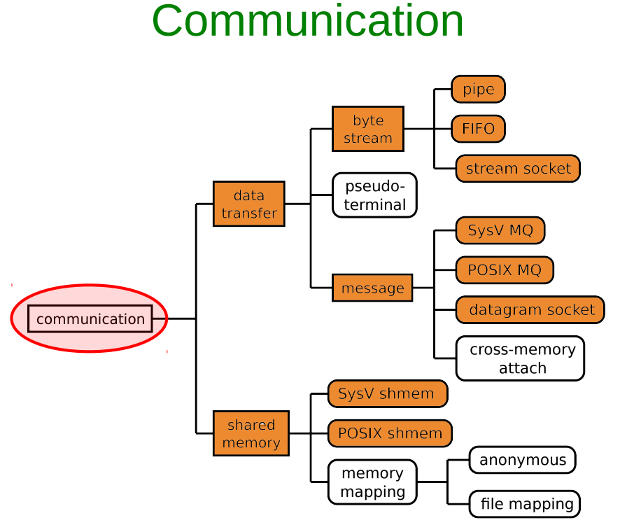
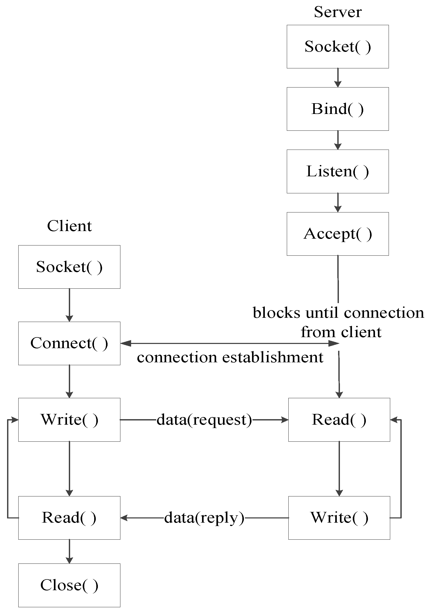
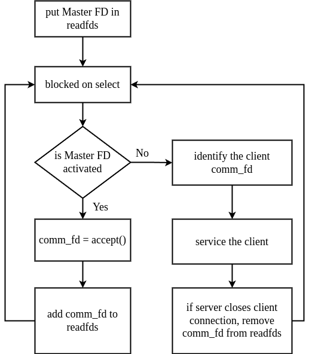
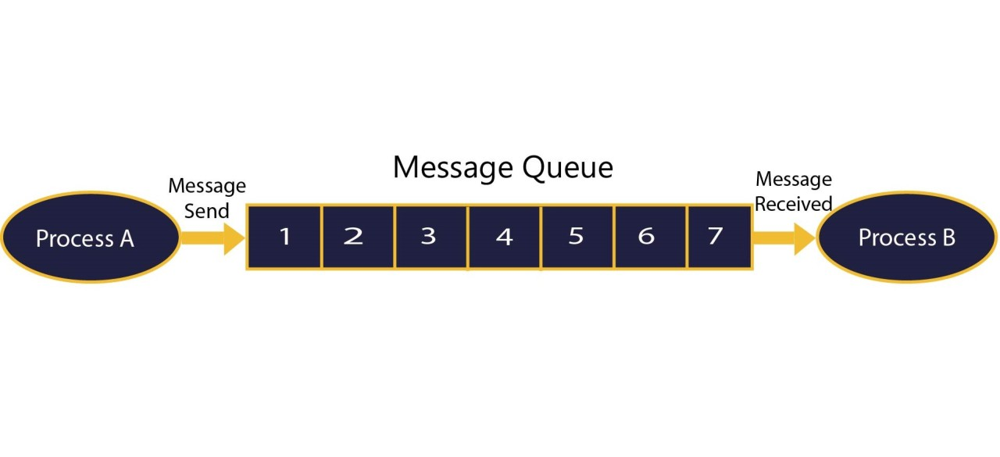
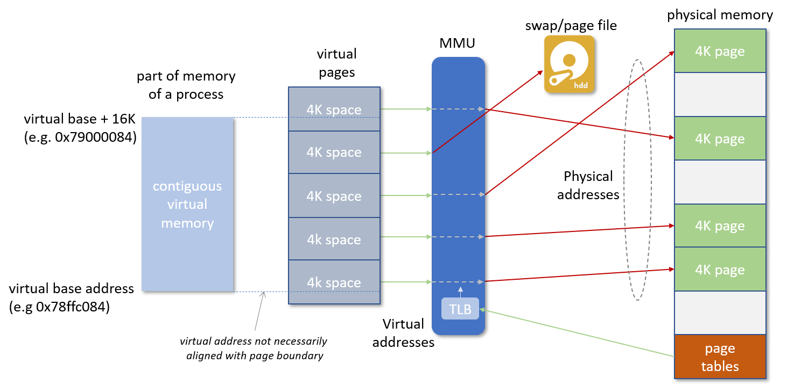
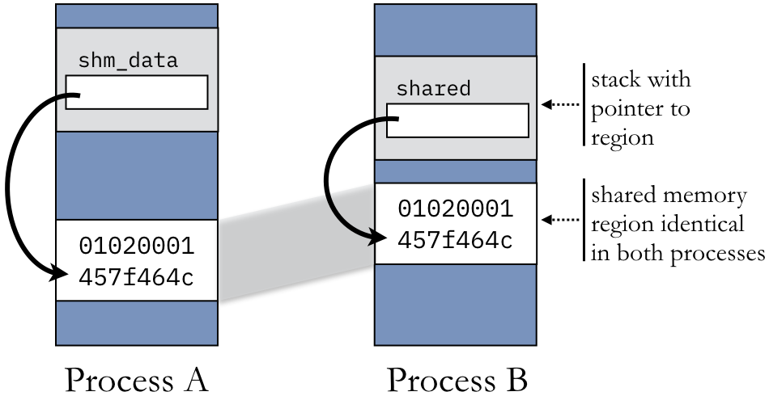
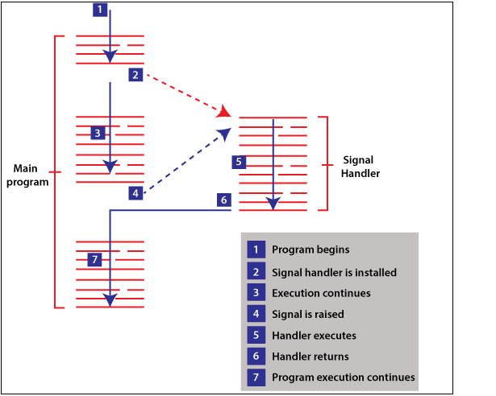

What is IPC and Why we need it?
IPC is a mechanism using which two or more process running on the same machine exchange their personal data with each other
Communication between processes running on different machine are not termed as IPC
Processes running on same machine, often need to exchange data with oter in order to implement some functionality
Linux OS provides serveral mechanisms using which user space processes can carry out communication with each other, each mechanism has its own pros and cons
User space <==> Netlink Skts / IOCTLS / Device files / System calls <==> Kernel <==> Device drivers <==> Hardware
IPC Techniques
1. Unix Domain sockets
2. Network Sockets
3. Message Queues
4. Shared Memory
5. Pipes (Not used in the industry)
6. Signals

Sockets
Unix/Linux like OS provide Socket Interface to carry out communication betwwen various types of entities
The Socket Interface are a bunch of Socket programming releated API
Two types:
- Unix Domain Sockets: IPC between processes running on the same system
- Network Sockets: Communication between processes running on different physical machines over the network
Sockets Steps and related API
1. Remove the socket, if already exits
2. Create a Unix socket using socket()
3. Specify the socket name
4. Bind the socket using bind()
5. listen()
6. accept()
7. Read the data recvd on socket using recvfrom()
8. Send back the result using sendto()
9. Close the data socket
10. Close the connection socket
11. Remove the socket
12. Exit

Sockets Message Types
Messages exchange between the client and the server processes can be categorized into two types:
- Connection Initiation Request Messages (CIR)
- Service Request Messages (SRM)
State Machine of Socket based Client Server Communication
1. When server boots up, it create a connection socket (also called "master socket file descriptor" using socket())
M = socket()
2. M is the mother of all client handles. M gives birth to all client handles. Client handles are also called "data_sockets"
3. Once client handles are created for each client. Server carries out communication (actual date exchange) with the client using client handle (and not M)
4. Server has to maintain the database of connected client handles or data sockets
5. M is only used to create new client handles, M is not used for data exchange with already connected client
6. accept() is the system call used on server side to create client handles
7. In linux terminology, handles are called as "file descriptors" which are just positive interger numbers. Client handles are called "communication file descriptors" or "data sockets" and M is called "Master socket file descriptor" or "Connection socket"
When the server receives new connetion initiation request msg from new client, this request goes on Master socket mainteined by server. Master socket is activated
When server receives connection initial request from client, server invokes the accept() to establish the didirectional communication
Return value of accept system call is client handle or communication file descriptor
accept() is used only for connection oriented communication, not for connection less connection
Unix Domain Sockets
Using UNIX Domain Sockets, you can setup STREAM of DATAGRAM based communication
- STREAM : When large files need to be moved or copied from one location to another, eg: copying a movies, continuous flow of bytes
- DATAGRAM : When small units of data needs to be moved from one process to another within a system
Multiplexing
Multiplexing is a machanism through which the server process can monitor multiple clients at the same time
Without multiplexing, server process can entertain only one client at a time, and can not entertain other client's request until it finishes with the current client
With multiplexing, server can entertain multiple connected clients simultaneously
select()
Server process has to maintain client handles (communication FDs) to carry out communication (data exchange) with connected clients
In addition, server process has to maintain connection socket or master socket FD as well (M) to process new connection req from new client
Linux provides an inbuild data structure to maintain the set of sockets file descriptors
select() system call monitor all socket FDs present in fd_set

Example
Code example of unix socket and network socketMessage Queues
Linux/Unix OS provides another mechanism called Message Queue for carrying out IPC
Processes running on same machine can exchange any data using message queues
Process can create a new message queue or can use an existing msgQ which was created by another process
A message queue is identified uniquely by the ID, no two msgQ can have same ID
Message queue resides and manage by the kernel/OS
Sending process A can post the data to the message queue, receiving process B reads the data from msg Q
Process which creates a msgQ is termed as owner or creator of msgQ
MsgQ as a kernel resource

Message queue creation
A process can create new msgQ or use an existing msgQ using below API
1. mq_open(const char *name, int oflag);
2. mq_open(const char *name, int oflag, mode_t mode, struct mq_attr *attr);
- name - Name of msg Q, eg "/server-msg-q"
- oflag - Operational flags
- mode - Permissions set by the owning process on the queue, usually 0660
- attr - Specify various atrributes of the msgQ being created
- - Like maximum size the msgQ can grow, should be less than or equal to /proc/sys/fs/mqueue/msg_max
- - Maximum size of the msg which msgQ can hold, should be less than or equal to /proc/sys/fs/mqueue/msgsize_max
if mq_open() succeeds, it returns a file (a handle) to msgQ. Using this handle, we perform all msgQ operations on msgQ throughout the program
Message queue closing
A process can close a msgQ using below API
1. int mq_close(mqd_t msgQ);
- After closing the msgQ, the process cannot use the msgQ unless it open it again using mq_open()
- Operating system removes and destroy the msgQ if all processes using the msgQ have closed it
- OS maintains information regarding how many process are using same msgQ (invoked mq_open()). This concept is called reference counting
- msgQ is a kernel reqource which is being used by application process. For kernel resource, kernel keeps track how many user space processes are using that particular resource
- When a kernel resource (msgQ in our exemple) is created for the first time by application process, reference_count = 1
- If other process also invoke open() on existing kernel resource (mq_open() in our case), kernel increments reference_count by 1
- When a processes invoke close() in existing kernel resource (mq_close() in our case), kernel decrements reference_count by 1
- When reference_count = 0, kernel; cleanups/destroys that kernel resource
- Remember, kernel resource could be anything, it could be socket FD, msgQ FD etc
Enqueue a message
A sending process can place a message in a message queue using below API
1. int mq_send(mqd_t msgQ, char *msg_ptr, size_t msg_len, unsigned int msg_prio);
- mq_send is for sending a message to the queue referenced by the descriptor msgQ
- The msg_ptr points to the message buffer, msg_len is the size of the message, which should be less than or equal to the message size for the queue
- msg_prio is the message priority, which is a non-negative number specifying the priority of the message
- Message are placed in the queue in the decreasing order of message priority, with the older messages for a priority coming before newer messages
- If the queue is full, mq_send blocks till there is space on the queue, unless the O_NONBLOCK flag is enabled for the message queue, in which case mq_send returns immediately with errno set to EAGAIN
Dequeue a message
A receiving process can dequeue a message in a message queue using below API
1. int mq_receive(mqd_t msgQ, char *msg_ptr, size_t msg_len, unsigned int msg_prio);
- mq_receive is for retrieving a message from the queue referenced by the descriptor msgQ
- The msg_ptr points to the empty message buffer, msg_len is the size of the buffer in bytes
- The oldest msg of the highest priority is deleted from the queue and passed to the process in the buffer pointed by msg_ptr
- If the pointer msg_prio is not null, the priority of the received message is stored in the interger pointed by it
- The default behavior of mq_receive is to block if there is no message in the queue. However, if the O_NONBLOCK flag is enabled for the queue, and the queue is empty, mq_receive returns immediately with errno set to EAGAIN
- On success, mq_receive returns the number of bytes receoved in the buffer pointed by msg_ptr
Destroying a message queue
A creating process can destroy a message queue using below API
1. int mq_unlink(const char *msgQ_name);
- mq_unlink destroys the msgQ (release the kernel resource)
- Should be called when the process has invoked mq_close() on msgQ
- Return -1 if it fails, 0 on success
- Postpone if other processes are using msgQ
Using a message queue
A message queue IPC mechanism usually supports N:1 communication paradigm, meaning there can be N senders but 1 receiver per message queue
Multiple senders can open the same msgQ using msgQ name, and enque their msgs in the same queue
Receiver process can dequeue the messages from the message queue that was placed by different sender processes
However, receiving process can dequeue message from different message queues at the same time (multiplexing using slect())
A msg queue can support only one client process
Client can dequeue msgs from more than one msg queues
No limitation on server processes
Example
Code example of message queueShared Memory
Memory mapping
Virtual memory, physical memory and secondary memory setup
1. Not all programs needs secondary storages, but most non-trivial applications do
2. Memory mapping is used to change the secondary storage of the program to some other source, say some hardware device memory or some particular file on disk
3. Your application is not even aware of physical memory, let alone secondary storages
4. So, your same notepad application shall run seamlessly even if we change secondary storage source to printer/camera device memory

Using external data source as shared memory
Virtual pages of both the processes maps to same physical pages loaded in RAM
Physical pages in turn are read/written to extenal memory
Rule: a process never can access any address outside of its VAS is never violated
Any modification made by process A in its shared VM, shall be seen by process B
Using RAM itself as data source

mmap()
void *mmap(void addr[.length], size_t length, int prot, int flags, int fd, off_t offset);
mmap() creates a new mapping in the virtual address space of the calling process. The starting address for the new mapping is specified in addr. The length argument specifies the length of the mapping (which must be greater than 0).
If addr is NULL, then the kernel chooses the (page-aligned) address at which to create the mapping; this is the most portable method of creating a new mapping. If addr is not NULL, then the kernel takes it as a hint about where to place the mapping; on Linux, the kernel will pick a nearby page boundary (but always above or equal to the value specified by /proc/sys/vm/mmap_min_addr) and attempt to create the mapping there. If another mapping already exists there, the kernel picks a new address that may or may not depend on the hint. The address of the new mapping is returned as the result of the call.
The contents of a file mapping (as opposed to an anonymous mapping; see MAP_ANONYMOUS below), are initialized using length bytes starting at offset offset in the file (or other object) referred to by the file descriptor fd. offset must be a multiple of the page size as returned by sysconf(_SC_PAGE_SIZE).
After the mmap() call has returned, the file descriptor, fd, can be closed immediately without invalidating the mapping.
Design constraints for using shared memory as IPC
Shared memory approach of IPC is used in a scenario where:
- Exactly one processes is responsible to update the shared memory (publisher process)
- Rest of the processes only read the shared memory (subscriber processes)
- The frequency of updating the shared memory by publisher process should not be very high
- If multiple processes attempts to update the shared memory at the same time, then it leads to write-wite conflict
- We need to handle this situation using mutual exclusion based synchronization
- Synchronization comes at the cost of performance, because we put the threads to sleep (in addition to their natural CPU preemption) in order to prevent concurrent access to critical section
When publisher process update the shared memory:
- The subscribers would not know about this update
- Therefore, after updating the shared memory, publisher needs to send a notification to all publishers which states that "shared memory has been updated"
- After receiving this notification, subscribers can read the update shared memory and update their internal data structures, if any
- The notification is just a small message, and can be sent out using other IPC mechanisms, such as Unix domain sockets or msg queues
Example
Code example of shared memorySignals
A system message sent from one process to another, not usually used to transfer data but instead used to remotely command the partnered process
When a process receives a signal. Either of the three things can happen:
1. Default
2. Customized
3. Ignore
A signal handler routine is a special function which is invoked when the process receives a signal
We need to register the routine against the type of signal (that is, process needs to invoke the function F when signal S is received)
Signal handler routine are executed at the highest priority, preemting the normal execution flow of the process

Well known signals in linux
1. SIGINT - interrupt (i.e., Ctrl-c)
2. SIGUSR1 and SIGUSR2 - user defined signals
3. SIGKILL - sent to process from kernel when kill -9 is invoked on pid, this signal cannot be caught by the process
4. SIGABRT - raised by abort() by the process itself, cannot be blocked, the process is terminated
5. SIGTERM - raised when kill is invoked, can be caught by process to execute user defined action
6. SIGSEGV - segmentation fault, raised by the kernel to the process when illegal memory is referenced
7. SIGCHILD - whenever a child terminates, this signal is sent to the parent. Upon receiving this signal, parent should execute wait() system call to read child status. Need to understand fork() to understand this signal
Three ways of generating signals in linux
1. Raising a signal from OS to a process
2. Sending a signal from process A to itself (using raise())
3. Sending signal from process A to process B (using kill())
Example
Code example of signalReferences
Linux Inter Process Communication (IPC) from Scratch in C